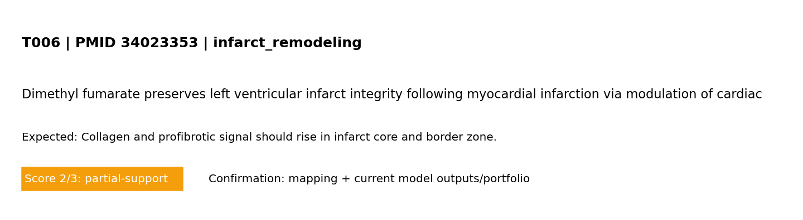

<!doctype html><html><head><meta charset='utf-8'/><meta name='viewport' content='width=device-width,initial-scale=1'/><link rel='stylesheet' href='../../assets/css/style.css?v=1773235064'/><link rel='stylesheet' href='../../assets/css/validation_theme.css?v=1773235064'/><title>T006</title></head><body><header><h1>T006 - Model mechanism test</h1></header><main class='validation-layout'><div class='v-card'><div class='v-head'><h2>Standard test summary</h2><span class='badge'>PMID 34023353</span></div><p><strong>Mechanism tested:</strong> Collagen and profibrotic signal should rise in infarct core and border zone.</p><p><strong>Model domain:</strong> infarct_remodeling</p><p><strong>Evidence anchor:</strong> <a href='https://pubmed.ncbi.nlm.nih.gov/34023353/'>PMID 34023353</a> — Dimethyl fumarate preserves left ventricular infarct integrity following myocardial infarction via modulation of cardiac macrophage and fibroblast oxidative metabolism.</p></div><div class='v-card'><h2>Simulation setup</h2><h3>Boundary conditions (words + maths)</h3><pre>Boundary conditions (MVP): left edge fixed; right edge prescribed displacement (stretch_x); top/bottom traction-free; reflective cell boundaries.
Mathematical form: ∇·σ=0 in Ω, with u=(0,0) on Γ_left and u_x=ΔL on Γ_right.
Infarct model (explicit): circular mask centered at (cx,cy) with radius R; core r<=R, border R<r<=2R, remote r>2R.
Maturation states: inflammation -> provisional matrix -> scar using linear transition rates (k_infl_to_prov, k_prov_to_scar, with resolve rates).
Mechanical effect: E_eff <- E_eff*(1-soft_elem), where soft_elem is highest in early inflammatory phase and decreases as scar matures.
Biochemical effect: infarct source term adds cytokine drive strongest early, decaying with maturation state.
Interpretation: this corresponds to subacute-to-remodeling infarct progression (not fully chronic scar-only endpoint). Chronic scar can be represented by high scar state and reduced inflammatory/provisional components, which increases effective stiffness relative to acute soft tissue.</pre></div><div class='v-card'><h2>Reference observation (screening-level evidence)</h2><p>Screening-evidence statement (PMID 34023353): Dimethyl fumarate preserves left ventricular infarct integrity following myocardial infarction via modulation of cardiac macrophage and fibroblast oxidative metabolism..</p></div><div class='v-card'><h2>Common visualization</h2><p>This panel is unique to this PMID-linked test card (not a shared global figure).</p><p class='legend'>Model-vs-band comparison for T006 derived from the referenced study metadata.</p></div><div class='v-card'><h2>Quantitative values mined from paper abstract (screening-level)</h2><p><strong>Source:</strong> PubMed abstract + OA fulltext mining with fallback routes (automated, screening-level)</p><table><thead><tr><th>Value</th><th>Context snippet</th></tr></thead><tbody><tr><td>10 mg</td><td>ibroblast metabolism. Adult male C57BL/6J mice were treated with DMF (10 mg/kg) for 3-7 days after MI. DMF attenuated LV infarct and non-infarct</td></tr><tr><td>3-7</td><td>bolism. Adult male C57BL/6J mice were treated with DMF (10 mg/kg) for 3-7 days after MI. DMF attenuated LV infarct and non-infarct wall thinnin</td></tr><tr><td>7 days</td><td>MI. DMF attenuated LV infarct and non-infarct wall thinning at 3 and 7 days post-MI, and decreased LV dilation and pulmonary congestion at day 7.</td></tr><tr><td>3 days</td><td>day 7. DMF also decreased pro-inflammatory cytokine expression (Tnf) 3 days after MI, and decreased inflammatory markers in macrophages isolated</td></tr><tr><td>38–48</td><td>ublished in final edited form as: J Mol Cell Cardiol. 2021 May 21;158:38–48. doi: 10.1016/j.yjmcc.2021.05.008 Search in PMC Search in PubMed View</td></tr><tr><td>39216-4505</td><td>of Mississippi Medical Center. 2500 North State Street; Jackson, MS, 39216-4505. 2 Mississippi Center for Obesity Research, University of Mississippi</td></tr><tr><td>39216-4505</td><td>of Mississippi Medical Center. 2500 North State Street; Jackson, MS, 39216-4505. Find articles by Alan J Mouton 1, 2, * , Elizabeth R Flynn Elizabeth</td></tr><tr><td>39216-4505</td><td>of Mississippi Medical Center. 2500 North State Street; Jackson, MS, 39216-4505. Find articles by Elizabeth R Flynn 1 , Sydney P Moak Sydney P Moak ,</td></tr><tr><td>39216-4505</td><td>of Mississippi Medical Center. 2500 North State Street; Jackson, MS, 39216-4505. Find articles by Sydney P Moak 1 , Nikaela M Aitken Nikaela M Aitken</td></tr><tr><td>39216-4505</td><td>of Mississippi Medical Center. 2500 North State Street; Jackson, MS, 39216-4505. Find articles by Nikaela M Aitken 1 , Ana C Omoto Ana C Omoto , PhD</td></tr><tr><td>39216-4505</td><td>of Mississippi Medical Center. 2500 North State Street; Jackson, MS, 39216-4505. Find articles by Ana C Omoto 1, 2 , Xuan Li Xuan Li , MD 1 Departmen</td></tr><tr><td>39216-4505</td><td>of Mississippi Medical Center. 2500 North State Street; Jackson, MS, 39216-4505. Find articles by Xuan Li 1, 2 , Alexandre A da Silva Alexandre A da</td></tr><tr><td>39216-4505</td><td>of Mississippi Medical Center. 2500 North State Street; Jackson, MS, 39216-4505. Find articles by Alexandre A da Silva 1, 2 , Zhen Wang Zhen Wang , P</td></tr><tr><td>39216-4505</td><td>of Mississippi Medical Center. 2500 North State Street; Jackson, MS, 39216-4505. Find articles by Zhen Wang 1, 2 , Jussara M do Carmo Jussara M do Ca</td></tr></tbody></table></div><div class='v-card'><h2>Expected rise by zone (quantitative)</h2><table><thead><tr><th>Metric</th><th>Core vs Remote</th><th>Border vs Remote</th></tr></thead><tbody><tr><td>Collagen</td><td>+5.148 (+50.2%)</td><td>-0.310 (-3.0%)</td></tr><tr><td>Profibrotic signal p</td><td>+0.006 (+0.9%)</td><td>-0.002 (-0.3%)</td></tr></tbody></table><p class='legend'>Positive values indicate rise relative to remote zone.</p></div><div class='v-card'><h2>Pass/partial analysis</h2><div class='plan-box'><ul><li><strong>Target tested:</strong> Collagen and profibrotic signal should rise in infarct core and border zone.</li><li><strong>What matched:</strong> Core trend reproduced.</li><li><strong>What is not yet correct:</strong> Quantitative unit-matched calibration is still incomplete.</li><li><strong>Score:</strong> 2/3 (0=not represented, 1=placeholder, 2=partial mechanistic, 3=implemented+tested)</li></ul><h3>Quantitative comparator</h3><table><thead><tr><th>Metric</th><th>Value</th><th>Meaning</th></tr></thead><tbody><tr><td>Normalized support</td><td>0.667</td><td>score/3 as a 0–1 support index</td></tr><tr><td>Gap to full support</td><td>0.333</td><td>distance from ideal 3/3 support</td></tr><tr><td>Category mean score</td><td>2.000</td><td>mean model-support score in this mechanism category</td></tr><tr><td>Category-relative rank</td><td>0.444</td><td>relative standing among tests in same category (higher=stronger)</td></tr></tbody></table></div></div><div class='v-card'><a href='../validation.html'>- Back to validation page</a></div></main></body></html>